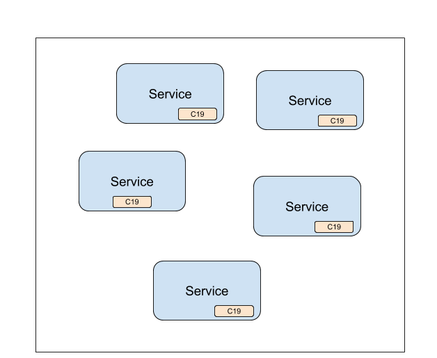
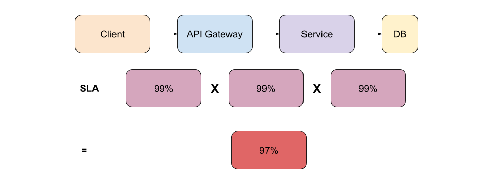
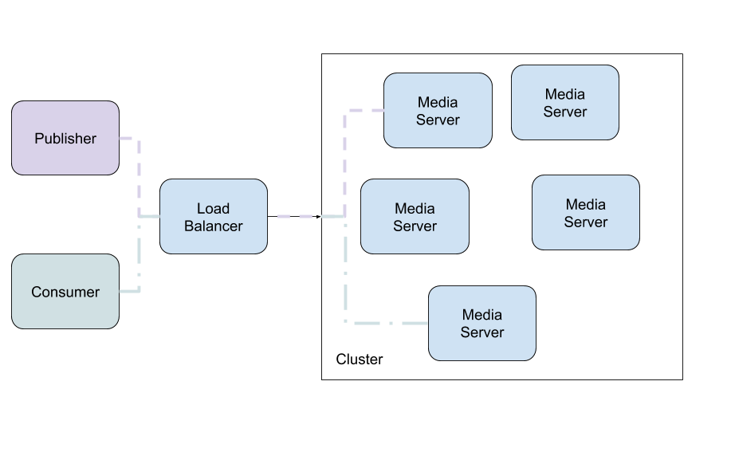
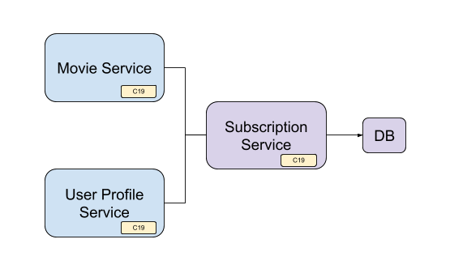
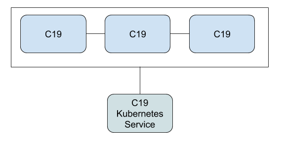
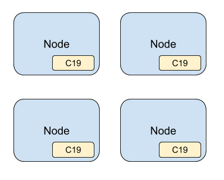
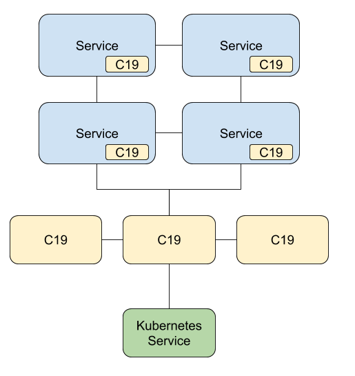

The C19 Protocol
by Chen Fisher
The C19 protocol is a variant of the Gossip protocol. It allows a group of services to agree on a service-wide state.
The state is shared across a distributed set of services which in effect means that each service has the data available locally.

C19 decouples the process of fetching the data from using it. Consider a service that depends on another service to get subscription data for a user. The dependent service would have to handle fetching the data before being able to use it. But fetching the data is not its main focus and should not be it's main concern. By decoupling fetching the data from using it, c19 makes sure the data is available locally to the service.
If you are running a microservices architecture you will soon, if not already, find yourself having to deal with dependencies across services, handling unavailability, scale, redundancy, etc. Microservices architecture brings with it a lot of complexities that are not at the core of your service. Solutions like Istio exist to help and solve this problem, but nothing really beats having the data available locally.
C19 is a simple, powerful and extensible system. It's low on resources and is easy to reason about.
Although c19 can be run anywhere and has no dependencies, this user-guide targets Kubernetes as the main platform to run the c19 system. One of the goals of this project is to allow simplicity and have it "just work" and Kubernetes as an orchestrator supports that goal.
Introduction
Welcome to the C19 protocol documentation! In this user guide you will find everything needed to understand and run the C19 protocol.
At its core, the C19 protocol goal is to share a state across a distributed set of services, handle fetching the data and make it available locally to be consumed by a service. Due to its distributed nature and low resource footprint, you gain redundancy, robustness and performance at a low cost.
Some of the ideas employed by this implementation are:
- Periodic interaction between agents that is decoupled from the change in state. This allows robustness even on high load systems where the state changes at a high rate.
- Bi-directional exchange of states to speed up state propagation across the system.
- Inherent replication of data which gives you redundancy and reliability.
Most importantly, the system is designed to be extensible and as you will see in the following chapters, you have full control and flexibility to choose the best strategy to match your data and your needs.
Motivation
Running microservices architecture has many benefits, but as you might already found out, it brings a lot of pain you must address. Services don't operate in an isolate world, services depend on each other to complete an operation. You have to answer questions like: what if one service becomes unavailable or loaded? What should be the strategy for the dependent service? Should it retry? Should it return an error or maybe fallback to a different result?
You then find yourself employing caching, auto scaling, retry logic, rate limiters and load balancing. Maybe you deploy Istio or Linkerd to deal with many of the issues. While these are great solutions, they solve for the general case and don't care about the data. But the data across your system is not equal. Some data can be stale, some of it must be available in real time. Is it worth-while loading your system for data that doesn't change much often? In fact, if you look closely at your data across your system, you might find out that some of it, if not most of it, can be consumed in a stale manner.
C19 doesn't come to replace the great solutions mentioned above, but it offers a different solution that would ease up the load on your system, would increase its availability, and would do so in a simplified way.
Failure Rate

Figure 1.0 - Service SLA
You may feel content that you have 99% service SLA. But looking at a typical topology like depicted in figure 1.0 above, you can see that there are usually more services involved in a single client request. If you count down the SLA for each one of the services, you can quickly see that the total service SLA drops down to 97%.
If you could bring the data to be available locally for any of the services above, you can immediately bring up your SLA.
Load
While most services can be horizontally scaled, some cannot. If you load the DB with a slow running query, you will immediately bring down the whole chain of services. If you handle your rate limits and circuit breakers well then you will end up with a degraded service at the best case scenario.
Even for other services that can be horizontally scaled, it doesn't come for free. You pay for resources.
Single Point of Failure
When talking about data, there is usually a single source of truth. Probably a database. Even if you scale your API services up to support the load on your system, you still have to get the data from your source of truth - the DB.
All data is NOT equal
Your data is not one thing. Your data differs in different ways across your system. Some of your data must be available in real-time while other data can be consumed while slightly stale. If this is the case, then why loading your system with redundant requests when the data can be available locally.
One Solution to Rule Them All!
Of course all of the above can be solved in different ways: load balancers, auto scaling, circuit breakers, DB replication, caching, etc... Each solution would require its own dedicated system.
C19 offers one, generic way, of solving many issues altogether. In the cases described above, a c19 group can share the state across the system while decoupled from the load of the system.
Use Cases
There are many use cases where the C19 protocol could be a good fit. C19 is a general-purpose solution for sharing state in a distributed system. In this chapter we show a few simple use-cases to help spark up your imagination of the possibilities.
As you will learn throughout this book, C19 allows for different configuration and Deployment Strategies. You will learn about the different layers and their usage. You will have a chance to look at the different possibilities and extensions of a C19 agent. This will help you figure out how your use case can be solved with the C19 protocol.
One of the benefits of the C19 protocol is that one solution, with only a configuration change, can serve many use-cases in your cluster.
Sharing State
You have a cluster of services and you want to share state across them.
This is a classic case for C19. Services that share the same C19 group will automatically share the state between them, effectively having the state available locally for each service. i.e distributed in-pod cache.
Note that different services can share the same C19 group. You are not limited to a single service type. For example, consider an API gateway service, Web backend and a third service type for user subscription information.
Media Service / Pulling from Origin
You have a cluster of media servers where users are live streaming to the cluster while other users consume the streams. When a user publishes a stream their stream will be published to one of the media server instances. When another user wishes to consume that stream they might end up connecting to a different media server instance.

The media server, serving the consumer, must pull the stream from the origin media server. How does it know where the stream origin is?
When the publisher first connects to the origin media server, the media server will set a key-value to it's local C19 agent. The key would be the identifier of the stream and the value would be the IP address of the origin media server. Since all the media servers are part of the same C19 group, the data will be shared across all instances.
When the consumer connects to a random media server, that media server can query its local C19 agent for the IP address of the origin and pull the stream from it. Simple as that!
User Subscription Data
You have a service that depends on another service for user subscription data. To make this interesting, let's say you have two service types that depend on a third service for the user subscription data: One that returns a list of available movies and another one that returns user information, including subscription data.

Interesting to note here is that the movie service and the user profile service are two different services. Each one of the services holds a C19 agent and they all share the same c19 group with the subscription service.
With this solution, instead of bombarding the subscription service with requests for data, hoping that the service will be available and respond in time, the c19 makes sure to bring the subscription data locally to each service.
Once the data is local, each service can request for data directly from the c19 agent instead of the subscription service.
Standalone Distributed Cache
Due to it's nature, the C19 protocol can be deployed as a standalone distributed cache and can be easily horizontally scaled.
As you've seen with the previous use-cases, the C19 agent is deployed within a pod, alongside the service it serves. As you will learn in Deployment Strategies chapter, the C19 protocol can be deployed as a standalone distributed cache or even as a daemonset to be present on every node.

Standalone C19 cluster
Getting Started
This chapter will guide you through configuring and deploying a C19 cluster.
As you will learn, the C19 protocol can support different deployment strategies and different configurations. In this chapter we will focus on the most common one so you can get an idea of how things work. Later in the book you will learn about the different options this project presents.
Dockerhub
The C19 docker image is available on Dockerhub and the Dockerfile can be seen in the C19 Github repository.
Configuring the Agent
A C19 agent has 3 parts (layers): agent, state and connection.
We will go into details about each layer in the Architecture chapter, but for now all you need to know is that the agent layer is responsible for communicating with your app, the connection layer is responsible for communicating with other C19 agents and the state layer is responsible for holding your data.
A C19 configuration file is a YAML formatted file. Let's prepare ours:
version: 0.1
spec:
agent:
kind: Default
port: 3097
state:
kind: Default
ttl: null
purge_interval: 60000
connection:
kind: Default
port: 4097
push_interval: 1000
pull_interval: 60000
r0: 3
timeout: 1000
peer_provider:
kind: K8s
selector:
c19: getting-started
namespace: default
As you can see, we have our 3 layer configurations: agent, state and connection. Every section starts with the kind configuration which
tells C19 which kind of agent/state/connection to load. As you will learn, there can be different types of layer implementations, each would
suit different needs.
Agent
kind - We will use the "Default" agent layer. For now, it's enough for you to know that the "Default" agent provides a HTTP server which
accepts a JSON formatted calls for getting and setting values to the state.
port - The port to use for the agent HTTP server. The default value, if unspecified, is 3097.
State
kind - Same as the Agent, we will use the "Default" state implementation. The "Default" state implementation provides a key-value store
with an option to set a TTL for each key.
ttl - The TTL to use (in milliseconds). If left out there will be no default TTL set for keys. In any case, as you will learn, you can always set a TTL for a
key when setting a value to the state. Default value is no ttl.
purge_interval - The Default state will always filter out expired keys, but will still hold them in memory until purged. This setting controls the
interval (in milliseconds) in which expired keys will be purged. Default value is 1 minute.
Connection
kind - We will use the "Default" connection layer implementation. The "Default" connection uses HTTP to exchange the state with other C19 peers.
It randomly chooses peers to connect to and exchanges the state at a specified interval.
port - The port to use when connecting to other peers and allowing other peers to connect to this C19 agent. Default port is 4097.
push_interval - Controls the interval (in milliseconds) in which the connection layer will connect and push the state to a random set of C19 peers. Default value is 1 second.
Setting this value higher will speed up propagation of the state in the system, but would come at the expense of CPU usage.
pull_interval - Controls the interval (in milliseconds) in which the connection layer will connect and pull the state from a random set of C19 peers. Default value is 60 seconds.
The connection layer will specify its own state version when pulling the state from other peers. If the state versions match then no state will be exchanged. This is to optimize
redundant state exchanges. If the versions do not match then the full state will be returned by the connected peer.
r0: Controls how many peers should this connection layer connect to at each publish interval. Setting this value higher will speed up propagation
of the state in the system, but would come at the expense of network load. (connecting to more peers). Default value is 3.
timeout - Controls the connection timeout (in milliseconds) when exchanging state with each peer. Default value is 1 second.
peer_provider - At each publish_interval, the connection layer will query the peer provider for a full list of available peers to choose from. There are
different types of peer providers. For example: Kubernetes peer provider that queries for pod endpoints based on a label selector and a static peer provider which allows specifying a predefined
list of peer endpoints. Since we will be deploying to a Kubernetes cluster we will be using the K8s
peer provider.
K8s Peer Provider
kind - Controls the type of peer provider to use. Default value is K8s
selector - Sets the Kubernetes pod label selector which will form a C19 group. Default value is none which means all pods will be used for the same C19 group.
This option allows you to have many different C19 groups. Each group will have its own isolated state shared.
namespace - The Kubernetes namespace to use. Defaults to the default namespace. Can also be set to :all (mind the :) to specify that all namespaces should be used.
Applying the Configuration
You specify the configuration file to use when running a C19 agent by using the --config <filename> flag.
Deploying to Kubernetes
We will deploy the C19 agent along side a pod that holds your application. The C19 agent will be available for your application at the localhost and the port used in our configuration (defaults to 3097).
Deployment topology
Let's say you have the following nginx deployment:
apiVersion: apps/v1
kind: Deployment
metadata:
name: nginx-deployment
labels:
app: nginx
spec:
replicas: 3
selector:
matchLabels:
app: nginx
template:
metadata:
labels:
app: nginx
spec:
containers:
- name: nginx
image: nginx:1.14.2
ports:
- containerPort: 80
The next section will show you a TL;DR of how to deploy C19 agent alongside the nginx deployment above. We will then continue to a step-by-step guide with the important details.
Deploying to Kubernetes / TL;DR
To attach a C19 agent to your nginx deployment, you will need two files:
- A configmap that will hold your C19 configuration as we saw in Configuring the Agent chapter.
- A Kubernetes deployment file.
1. Configmap
apiVersion: v1
kind: ConfigMap
metadata:
name: c19-getting-started-config
immutable: true
data:
config.yaml: |
version: 0.1
spec:
agent:
kind: Default
port: 3097
state:
kind: Default
ttl: null
purge_interval: 60000
connection:
kind: Default
port: 4097
push_interval: 1000
pull_interval: 60000
r0: 3
timeout: 1000
peer_provider:
kind: K8s
selector:
c19: getting-started
namespace: default
Save this as configmap.yaml file and apply it to the cluster like so:
kubectl apply -f configmap.yaml
2. Deployment File
apiVersion: apps/v1
kind: Deployment
metadata:
name: nginx-deployment
labels:
app: nginx
spec:
replicas: 3
selector:
matchLabels:
app: nginx
template:
metadata:
labels:
app: nginx
c19: getting-started
spec:
containers:
- name: nginx
image: nginx:1.14.2
ports:
- containerPort: 80
- name: c19
image: c19p/c19:0.1.0
args: ["/usr/local/bin/c19", "--config", "/etc/c19/config.yaml"]
ports:
- name: agent
containerPort: 3097
protocol: TCP
- name: connection
containerPort: 4097
protocol: TCP
volumeMounts:
- name: c19
mountPath: /etc/c19
volumes:
- name: c19
configMap:
name: c19-getting-started-config
Save this as deployment.yaml file and apply it to the cluster like so:
kubectl apply -f deployment.yaml
That's it! Your C19 powered Nginx is now deployed to Kubernetes and is ready to be used.
In the next section we will go through what we just did with a bit more details. Don't worry, it will still feel like a TL;DR. If you feel comfortable with what we did above, you can skip the step-by-step walkthrough and jump right into Testing the Deployment.
Deploying to Kubernetes / Step-by-Step
We need three things to configure:
- Add a label to the pod to be used as the selector for the C19 group
- Add a C19 agent container to the pod
- Add a configmap with our C19 configuration and refer to it from the container definition
Labeling Our Pod
Note that in this example we use a single service type: nginx, but as mentioned before, this can be cross services. Imagine you had another service: web. You would do the same for the web pod: add a container, use the same label and refer to the same configuration.
We will add the following label selector to our pod:
c19: getting-started this matches our configuration from the previous section.
apiVersion: apps/v1
kind: Deployment
metadata:
name: nginx-deployment
labels:
app: nginx
spec:
replicas: 3
selector:
matchLabels:
app: nginx
template:
metadata:
labels:
app: nginx
c19: getting-started
spec:
containers:
- name: nginx
image: nginx:1.14.2
ports:
- containerPort: 80
Add a C19 Container to the Pod
apiVersion: apps/v1
kind: Deployment
metadata:
name: nginx-deployment
labels:
app: nginx
spec:
replicas: 3
selector:
matchLabels:
app: nginx
template:
metadata:
labels:
app: nginx
c19: getting-started
spec:
containers:
- name: nginx
image: nginx:1.14.2
ports:
- containerPort: 80
- name: c19
image: c19p/c19:0.1.0
args: ["/usr/local/bin/c19", "--config", "/etc/c19/config.yaml"]
ports:
- name: agent
containerPort: 3097
protocol: TCP
- name: connection
containerPort: 4097
protocol: TCP
As you can see, we are using the ports we defined in our C19 configuration for the agent and connection layers (3097, 4097 respectively).
Add a Configmap and Refer to it From the Pod Definition
Let's first create the config map (configmap.yaml):
apiVersion: v1
kind: ConfigMap
metadata:
name: c19-getting-started-config
immutable: true
data:
config.yaml: |
version: 0.1
spec:
agent:
kind: Default
port: 3097
state:
kind: Default
ttl: null
purge_interval: 60000
connection:
kind: Default
port: 4097
push_interval: 1000
pull_interval: 60000
r0: 3
timeout: 5000
peer_provider:
kind: K8s
selector:
c19: getting-started
namespace: default
Save this as configmap.yaml file and let's apply this to the cluster:
kubectl apply -f configmap.yaml
And finally, let's refer to our configuration from the configmap
The Final Deployment YAML (deployment.yaml):
apiVersion: apps/v1
kind: Deployment
metadata:
name: nginx-deployment
labels:
app: nginx
spec:
replicas: 3
selector:
matchLabels:
app: nginx
template:
metadata:
labels:
app: nginx
c19: getting-started
spec:
containers:
- name: nginx
image: nginx:1.14.2
ports:
- containerPort: 80
- name: c19
image: c19p/c19:0.1.0
args: ["/usr/local/bin/c19", "--config", "/etc/c19/config.yaml"]
ports:
- name: agent
containerPort: 3097
protocol: TCP
- name: connection
containerPort: 4097
protocol: TCP
volumeMounts:
- name: c19
mountPath: /etc/c19
volumes:
- name: c19
configMap:
name: c19-getting-started-config
Save this as a deployment.yaml file and let's apply this to our cluster:
kubectl apply -f deployment.yaml
Testing the Deployment
Now that we have our C19 powered Nginx deployment, let's test it.
We'll use Kubernetes port-forwarding to have two of the pods available to us locally. We will then use curl to get and set values to the C19 agent.
1. Port-Forwarding
$ kubectl get pods
NAME READY STATUS RESTARTS AGE
nginx-deployment-6bc49755fb-6h4l8 2/2 Running 0 32m
nginx-deployment-6bc49755fb-v4nx9 2/2 Running 0 32m
nginx-deployment-6bc49755fb-vw7q9 2/2 Running 0 32m
kubectl port-forward nginx-deployment-6bc49755fb-6h4l8 3097:3097
kubectl port-forward nginx-deployment-6bc49755fb-v4nx9 3098:3097
As you can see, we port-forwarded local port 3097 to 3097 of one pod and 3098 to 3097 of a second pod.
We will now use curl to set values to one of the C19 agents and see that the data is available on the second C19 agent as well.
2. Setting and Getting Values
curl -XPUT localhost:3097/ -d '{"cat": {"value":"garfield"}}'
We just put the key/value pair cat and garfield to the first C19 agent.
Let's get the value from this pod first:
$ curl localhost:3097/cat
{"value":"garfield","ts":1603548753122,"ttl":null}
You can see that the value returned to us is a JSON that includes the value, the timestamp and the ttl, which is set to null in this example.
Now let's get the value from the second C19 pod:
$ curl localhost:3098/cat
{"value":"garfield","ts":1603548753122,"ttl":null}
We used 3098 this time to make the call to the second C19 agent. We got the same value! True magic ;)
3. Setting a TTL
Let's set a ttl for the cat key. It doesn't matter if we use the first or the second C19 agent for that, as the data will propagate between them.
For the sake of this example, we will use the second C19 agent:
curl -XPUT localhost:3098/ -d '{"cat": {"value":"garfield", "ttl": 20000}}'
We just set a TTL of 20 seconds to thecat key. Let's quickly get it from the first pod before it goes away:
$ curl localhost:3097/cat
{"value":"garfield","ts":1603549250457,"ttl":20000}
Ok, we got it back. Now if we wait long enough and try to get the value again:
$ curl localhost:3097/cat
not found
We got not found (404) as a response. The value is long-gone...
4. Getting the Whole State
The Default connection layer implementation exposes port 4097 (by default) as the port for exchanging data between peers.
You can use that port to query the whole state! Let's see how we can do this:
$ kubectl port-forward nginx-deployment-6bc49755fb-vw7q9 4097:4097
$ curl -XPUT localhost:3097/ -d '{"cat": {"value":"garfield"}}'
$ curl -XPUT localhost:3097/ -d '{"dog": {"value":"Snoopy"}}'
$ curl -s localhost:4097 | jq
{
"dog": {
"value": "Snoopy",
"ts": 1603549623758,
"ttl": null
},
"cat": {
"value": "garfield",
"ts": 1603549562977,
"ttl": null
}
}
Amazing!
(We used jq for pretty printing the JSON value)
5. Keep playing
I hope you got the gist of it. Feel free to keep playing and experimenting with the C19 cluster.
Standalone Deployment Using Helm Chart
As you've seen in the use-cases chapter, the C19 can be deployed as a standalone distributed cache.
In this section we will walkthrough a quick deployment of a standalone C19 cluster using a Helm chart.
1. The Helm Chart
replicaCount: 3
image:
repository: c19
tag: "0.1.0"
service:
type: ClusterIP
port: 3097
agent:
kind: Default
port: 3097
connection:
kind: Default
port: 4097
push_interval: 1000
pull_interval: 60000
r0: 3
timeout: 1000
state:
ttl: false
purge_interval: 60000
config:
filename: /etc/c19/config.yaml
log:
level: c19=info
autoscaling:
enabled: false
minReplicas: 1
maxReplicas: 100
targetCPUUtilizationPercentage: 80
serviceAccount:
create: false
ingress:
enabled: false
If you've gone through the Configuring the Agent chapter, you should feel comfortable with the above Helm chart. It's just another form of describing the configuration which you already know.
You can find the helm chart under the helm repository of the C19 project.
Apply this to your Kubernetes cluster:
helm install getting-started helm/standalone
2. The C19 Service
Since we deployed C19 as a standalone distributed cache, we will find a C19 Kubernetes service that will traffic our data to and from the C19 pods:
$ kubectl get services
NAME TYPE CLUSTER-IP EXTERNAL-IP PORT(S) AGE
getting-started-c19-standalone ClusterIP 10.96.29.46 <none> 3097/TCP 3m
The C19 service exposes the port 3097 and is accessible from across the cluster.
3. Testing
To test the deployment, you can use the same techniques as we used in the previous chapter Testing the Deployment.
Non-Kubernetes Deployment
If you are not running a Kubernetes cluster or you want to test C19 locally without a Kubernetes cluster, you can easily do so by using the Static Peer Provider.
As you've learned in previous chapters, the Connection layer uses a Peer Provider to query for available peers to choose from. The peer provider we've been using so far was K8s since we deployed and used C19 inside a Kubernetes cluster. But that doesn't mean we can't use it outside of a Kuernetes cluster.
The Static Peer Provider
The static peer provider allows us to manually and statically specify the peers that are available in our C19 group.
connection:
kind: Default
push_interval: 1000
pull_interval: 60000
port: 4097
target_port: 4097
r0: 3
timeout: 1000
peer_provider:
kind: Static
peers:
- 192.168.1.2
- 192.168.86.204
The connection configuration above uses the static peer provider with 2 available peers in the group. You can specify how many you want. The port that will be used by the connection layer is determined as follows, by this order:
- The static peer provider includes the port with a peer. For example:
192.168.1.2:5097 target_portis specified- If non of the above exist then
portwill be used as the target port.
Docker Compose
There are different ways you can run C19 on your local machine. For this demonstration and for the sake of simplicity, we will use docker-compose.
If you'd like to deploy without Docker then you'd have to pull the source code from the C19 Github
repository and compile it using Rust. If you are familiar with Rust then you should find the procedure for compiling straight forward. Just
use cargo build --release and you're done.
After you have c19 binary ready, you can move forward with the following steps and make the proper adjustments when things are specifically relevant
for Docker deployment.
1. Configuring for Local Deployment
So now that we know all about the static peer provider, let's configure it so we can then deploy a C19 cluster on our local machine.
We will use the following configuration for our C19 agents:
version: 0.1
spec:
agent:
kind: Default
port: 3097
state:
kind: Default
ttl: null
purge_interval: 10000
connection:
kind: Default
push_interval: 1000
pull_interval: 60000
port: 4097
r0: 3
timeout: 1000
peer_provider:
kind: Static
peers:
- 192.168.0.2
- 192.168.0.3
- 192.168.0.4
Let's save this configuration as config.yaml
2. Configuring docker-compose
We will configure our docker-compose to use a network which will allow us to set a static IP address for each C19 agent.
version: "3.8"
x-c19: &c19
image: c19p/c19:0.1.0
command: ["/usr/local/bin/c19", "--config", "/etc/c19/config.yaml"]
environment:
RUST_LOG: "c19=info"
deploy:
replicas: 1
volumes:
- "./config.yaml:/etc/c19/config.yaml:ro"
services:
c191:
<<: *c19
networks:
cluster:
ipv4_address: 192.168.0.2
ports:
- "3097:3097"
- "4097:4097"
c192:
<<: *c19
networks:
cluster:
ipv4_address: 192.168.0.3
ports:
- "3098:3097"
- "4098:4097"
c193:
<<: *c19
networks:
cluster:
ipv4_address: 192.168.0.4
ports:
- "3099:3097"
- "4099:4097"
networks:
cluster:
ipam:
driver: default
config:
- subnet: "192.168.0.0/24"
Save this as docker-compose.yaml
As you can see, we configured the cluster network and used the same c19 service configuration except for the static IP address
and the port mapping.
3. Running the C19 Agents
docker-compose up
4. Inspecting Our Deployment
Let's inspect our deployment:
$ docker-compose ps
Name Command State Ports
----------------------------------------------------------------------------------------------------------
resources_c191_1 /usr/local/bin/c19 --config /etc/c19/co ... Up 0.0.0.0:3097->3097/tcp, 0.0.0.0:4097->4097/tcp
resources_c192_1 /usr/local/bin/c19 --config /etc/c19/co ... Up 0.0.0.0:3098->3097/tcp, 0.0.0.0:4098->4097/tcp
resources_c193_1 /usr/local/bin/c19 --config /etc/c19/co ... Up 0.0.0.0:3099->3097/tcp, 0.0.0.0:4099->4097/tcp
We have three C19 agents as expected, exposing ports to our local host for our inspection.
You can now follow up with Testing the Deployment chapter to play around with your deployment.
Setting and Getting Values
Setting and getting values from a state is done by the Agent layer. This is the entry point to the c19 agent and where your app comes into play. Your application uses the endpoints exposed by the Agent layer of the C19 agent to get and set values to the state.
Communicating with the Agent layer depends on the Agent layer chosen by you in the C19 configuration. If you've followed the Getting Started guide so far,
then you have noticed we were using the Default agent layer which exposes two endpoints: GET and PUT for getting and setting values.
Setting a Value While Using the Default Agent Layer
curl -XPUT localhost:3098/ -d '{"cat": {"value":"garfield", "ttl": 20000}}'
The Default agent layer implementation expects a PUT request and will pass the value as-is to the state layer implementation. The agent layer
is agnostic to the content of the PUT request, but the Default state layer, which we are using for our examples, dictates that the body will be a JSON object with the following form:
{
"key": {
"value": "any valid json value, including a json object",
"ttl": "optional ttl value for this key",
"ts": "optional timestamp for the key"
}
}
Getting a Value While Using the Default Agent Layer
$ curl localhost:3097/cat
{"value":"garfield","ts":1603548753122,"ttl":null}
The Default agent layer expects a GET request while the path is the key to retrieve from the state.
Since we are using the Default state layer implementation, the answer is a JSON body similar to the one used for setting a value.
The agent itself is agnostic to the body returned by the state layer.
Different Agent Layers
The above is an example for using the Default agent layer. As mentioned, different agent layers will have
different implementations. Please refer to Appendix I to get specific information of the different Agent layers.
Compatibility
Important to note that not all layers are compatible with one-another. One Agent layer might not be compatible with a certain State layer. Please refer to the documentation of the layers you choose to make sure everything can work together.
Deployment Strategies
There are different ways to use The C19 Protocol. As you may have seen in the Use cases chapter, deployment of the C19 protocol is dependent on your use-case.
The most classic deployment strategy and where the C19 shines against other alternatives is to have it deployed alongside your application and let it bring the data you need locally to your application.
But since the C19 protocol is a general purpose, distributed shared state, it can be deployed and used in many other ways. Let's briefly go through different deployment strategies to spark up your imagination. You are free to experiment with different deployment strategies and use cases.
Deploying Alongside a Service
As seen in the Sharing State use case, this deployment strategy has the c19 agent attached to your application by deploying it in the same pod as your application. It is then available to your application on the localhost.
You configure the C19 to be part of a group of other C19 agents that are attached to your other services and share the state between them. Note that the other C19 agent can be attached to different kinds of services.
Please refer to Getting Started / Deploying to Kubernetes chapter for a walkthrough on how to do that.
Deploying as a Standalone Cluster
Since the C19 agent is agnostic to how and where it runs, you can deploy it as a standalone service.
You can then have it connect to other C19 agents by using the proper peer provider, depending on your usage, whether it's a Kubernetes cluster or anything else.
Once you have a C19 cluster you can create a service or other load balancer to act as a gateway to your C19 cluster and to allow you to get and set values to the shared state.
The C19 Protocol can be easily scaled horizontaliy by adding more replicas of C19 agents. Once an agents comes online it will shortly after be updated with the current shared state.
Please refer to the Standalone Distributed Cache Use Case to get some more ideas.
Deploying as a Daemonset

Similar to the standalone deployment strategy and if you are deploying to a Kubernetes cluster, you can have the C19 agent deployed as a daemonset and have it deployed to every node or a subset of nodes in your Kubernetes cluster.
You can then create a service to act as a gateway to your C19 cluster or use a node port where you will be able to access your C19 cluster directly on each node.
This would have your cluster-wide shared state available on every node.
A Hybrid Deployment

You are not bounded to a single deployment strategy. If your use case justifies it, you may combine different deployment strategies together. A hybrid solution.
Consider a case where you have the classic deployment strategy where the C19 agents are attached to your services. You then want a standalone deployment that will be part of the same C19 group as with your services, and act as a gateway to the shared state.
Architecture
If you've followed the Getting Started guide and read through Configuring the Agent chapter, then you had a chance to get a glimpse into the C19 agent architecture.
The main components of a C19 agents are the three layers: Agent, Connection and State. Each layer has different responsibilities within the C19 agent.
The State is where your data is being held. It allows the other layers to set and get values to and from the state.
The Agent is the entry-point to your application and where you communicate with the C19 agent. It exposes ways for your application
to communicate with the C19 agent, set and get values to and from the state.
The Connection is the low-level layer that is responsible for communicating with other C19 agents and exchange the state with them.
Due to the nature of C19 extensibility, there are different implementations for each layer. You are free to choose whichever one suites your needs. Depending on
your use case you may want to choose a State that acts as a key/value store or maybe one that holds blobs of data.
Your Agent might be one that accepts HTTP JSON requests for setting and getting values or it might be one that communicates over WebSockets.
The Connection layer you choose affects how your data is being exchanged with other C19 agents. You may choose one that is optimized for fast state propagation
at the expense of network and CPU resources or maybe one that is slower to propagate data but is low on resources.
In this chapter we will talk about each layer in a bit more detail and use the Default layer implementations as an example.
The State Layer
The state layer is where your data is being held. The State is responsible for the way it holds your data and represents the data structure. A State can be a key/value store, a blob of data or anything else that is either structured or unstructured.
The State exposes ways to set and get data to and from it and is being used by the Agent and Connection layers.
Let's inspect the Default state layer implementation. We'll use that as an example of how a state behaves and what configuration is available.
When you feel comfortable with what a State is, you can refer to Appendix I / Available States to browse through available states and choose the
one that fits your use case. Make sure to check that section often as we expect this list of available states to grow.
The Default State
In this section we will walk through the Default implementation of the State layer. Please don't be mistaken by
thinking Default means just a placeholder for something more powerful or that this implementation is not for production usage.
This Default implementation is powerful enough to answer most use cases. It is default just because we had to start with something...
Behavior of the Default State
The Default state layer is a key/value store, where the key is expected to be a string and the value anything JSON compatible, including a JSON
object.
The Default state layer supports setting up a TTL per key or a default TTL to be applied to all keys that don't have a TTL set when
putting a value into the state.
Also supported is a data seeder. You will learn more about data seeders in the Data Seeders chapter. For now it is enough to know that a data seeder will load your data into the C19 agent as it first launches.
State Configuration
state:
kind: Default
ttl: null
purge_interval: 60000
data_seeder:
kind: File
filename: data.json
kind - Here we mention we would like to use the Default state layer.
ttl - The TTL to use (in milliseconds). If left out then there will be no default TTL set for keys. In any case, you can always set a TTL for a
key when setting a value to the state. Default value is no ttl.
purge_interval - The Default state will always filter out expired keys, but will still hold them in memory until purged. This setting controls the
interval (in milliseconds) in which expired keys will be purged. Default value is 1 minute.
data_seeder - Optional and can be omitted. The Data Seeder to use when launching the C19 agent. In the above example we are using a data seeder that loads
the data from a file named data.json
Data Seeders
When a C19 agent launches it connects to other C19 peers and exchanges data with them. This means that as soon as it launches it will be in par with other C19 agents and there will be no need for seeding data.
But there are cases where you'd want to seed external data into your C19 agent. We will talk about a few of these cases in the Seeding Data chapter.
Data Seeders allow you to seed external data into your C19 agent as soon as it launches. You can refer to Appendix I / Available Data Seeders for a list of available
data seeders.
Let's explore the File data seeder.
File Data Seeder
This data seeder will load data from a file. The data in the file must be compatible with the State layer you are using.
For our example, we assume the Default state layer implementation.
{
"cat": {
"value": "garfield",
"ttl": 3600000
},
"dog": {
"value": "snoopy"
}
}
When the C19 agent first launches it will load this data into its state and will continue with exchanging this state with other peers as normal.
The Agent Layer
The Agent is the entry-point to your application. An Agent exposes ways for your application to get and set values to and from the State.
Different agents can use different ways to expose your application to get and set values. We will explore the implementation of
the Default agent layer as an example.
Please refer to Appendix I / Available Agents to learn about available agents to choose from.
The Default Agent
The Default agent layer allows an application to get and set values using HTTP requests.
It does not assume anything about the State being used, hence the body of the request can be anything.
Setting Values
The agent exposes a PUT request endpoint which accepts a body of any type that will be passed to the state.
As mentioned, the Default agent does not assume anything about the State being used. This means that the body of the
message can represent any type. When using the Defaul state layer, the body of the message is expected to be a JSON object
representing the value being set:
curl -XPUT localhost:3097/ -d '{"cat": {"value":"garfield"}}'
Getting Values
The agent exposes a GET request endpoint where the path represents the key to be retrieved from the state. The response is dependent on the State
being used. In the following example we are using the Default state layer which outputs a JSON object with the value
and extra details:
$ curl localhost:3097/cat
{"value":"garfield","ts":1603548753122,"ttl":null}
Configuration
agent:
kind: Default
port: 3097
The only relevant configuration option for the Default agent layer is the port to bind to when accepting connections from an application.
The default port value is 3097.
The Connection Layer
The connection layer is responsible for exchanging the state with other C19 agents. It is up to the implementation of the connection layer to determine how the state should be exchanged, at what rate, what would be the transport layer, etc...
Different connection layer implementations might use different techniques and optimizations when exchanging data with other peers. You may refer to the Appendix I / Available Connections section to browse through available connection layer implementations and their use-case.
In the next section we will explore the Default connection layer implementation and its different configurations.
The Default Connection
The Default connection layer implementation picks up random set of peers on each specified interval and uses HTTP calls to exchange its own state with
the peer's state.
There are different subtleties that affect its behavior and can be configured. Let's explore them through the available configuration options.
Configuration and Behavior
connection:
kind: Default
port: 4097
push_interval: 1000
pull_interval: 60000
r0: 3
timeout: 1000
peer_provider:
kind: K8s
selector:
c19: getting-started
namespace: default
port - The port to bind to and accept connections from other peers.
push_interval - The rate (in milliseconds) in which the connection layer will connect and push its state to other peers. To optimize state exchanges, the connection layer will only send the changes since
last publish time. See the pull_interval for when the full state will be exchanged with other peers. The lower this number is, the faster the reaction
to new state changes, but at the expense of CPU time. Depending on the size of your data, preparing the state changes to be published might be time consuming.
pull_interval - The rate (in milliseconds) in which the connection layer will connect and pull the state of other peers. It will specify the version of its own state and only if the versions do
no match then the other peer will respond with its full state.
r0 - The number of peers to connect to on each publish_interval. The peers are being selected randomly. The bigger this number is, the faster the data will propagate across the system, but at the expense of time
it takes for each exchange. The implementation tries to parallelize the connections to other peers, but it still has its limits. If the rate of changes to the state is high and you
choose a big r0, it comes at the expense of publishing new values to the system.
timeout - The connection timeout (in milliseconds). If this connection layer cannot connect to other peer within this timeout then the connection will be aborted.
peer_provider - The connection uses a peer provider to get the full list of available peers to connect to. It will then choose a random set of peers based on the r0 configuration value. The peer provider
can be anything on the available peer providers list. Please refer to the Appendix I / Available Peer Providers to browse through. In the configuration example above, we are using the K8s peer provider. This
peer provider targets Kubernetes and allows you to choose the label selector of the pods that are part of your C19 group.
Exchanging the State
The Default connection layer selects a random set of peers to connect to and exchange the state with.
It runs two threads: push and pull. When pushing, only the changes from last publish time are being sent to other peers.
When pulling, the connection layer will specify its own state version and only if it does not match the peer's state version, will the full state be returned by the peer.
The state version is calculated from the keys and timestamps for each keys.
Peer Providers
When a connection layer needs to select peers to connect to it uses a Peer Provider to get the full list of available peers to choose from.
This is of course implementation dependent and you should first confirm that the connection layer you choose is working with peer providers.
The Default connection layer is using a peer provider to get the full list of available peers. As with other components in the C19 agent,
there are different peer providers to choose from.
Please refer to Appendix I / Available Peer Providers for a full list of peer providers to choose from.
Let's look at two peer providers as an example:
1. The K8s Peer Provider
peer_provider:
kind: K8s
selector:
c19: getting-started
namespace: default
The K8s peer provider targets Kubernetes and will query for pod endpoints using a label selector. You can configure the K8s peer provider to query
across all namespaces or a single one.
2. The Static Peer Provider
peer_provider:
kind: Static
peers:
- 192.168.1.2
- 192.168.86.204
The static peer provider allows setting a fixed, predefined list of peers. You can configure it to include as many peers as you wish and can also
include a different port for each peer. If no port is specified it will fall back to the target_port of the connection layer or the port configuration of
the connection layer.
Configuration
The C19 agent is configured using a YAML file. When running the c19 binary you specify the configuration
file using the --config flag.
The configuration file is divided into 3 main parts, one for every layer: Agent, State and Connection. Since the configuration is specific to the layer chosen, your configuration will vary depending on the layers you choose.
For example, the following configuration uses the Default Agent, State and Connection layers.
For the Connection layer the k8s peer provider is chosen and for the Default state the file
data seeder is being used.
version: 0.1
spec:
agent:
kind: Default
port: 3097
state:
kind: Default
ttl: null
purge_interval: 60000
data_seeder:
kind: File
filename: data.json
connection:
kind: Default
port: 4097
push_interval: 1000
pull_interval: 60000
r0: 3
timeout: 1000
peer_provider:
kind: K8s
selector:
c19: getting-started
namespace: default
Please refer to Appendix I for specific details on each available layer.
Seeding Data
The C19 Protocol can be considered as a distributed cache layer. As with all other cache implementations, one must consider a case where they would have to seed data into the cache once it first loads.
When a C19 agent first launches it connects to other C19 agents and exchanges data with them. This means there's no need for seeding data as it will be in par with other C19 agents soon after it loads.
We can also look back at the Media Service use case and see that in this case, even with a fresh new cluster we do not need to seed data as the data is being set with every new publisher who starts publishing to the cluster.
But there are still cases where you'd want to seed external data into your C19 cluster and for that we can consider two approaches:
Two Approaches to Seeding Data
1. Using a Data Seeder
This is a simple and easy way to seed data into your C19 cluster. When a C19 agent first loads it will use a Data Seeder to load data
to its State and will then continue as normal with exchanging this data with other C19 agents.
Please refer to Architecture / Data Seeders for a quick example of the File data seeder and to Appendix I / Available Data Seeders for
a list of available data seeders.
2. On-Demand Data Seeding
Consider how ARP (Address Resolution Protocol) works: It holds a table of MAC to IP tuple and when a higher application level asks
the ARP service for the MAC of a specific IP address it will first check its table and if it doesn't have this information it will send a request across
the wire "who has IP address..." and will then cache the response to its table.
We can do the same with C19. Your application can set missing values to your local C19 agent on-demand. If a value is missing your application will retrieve it in another way and will set the response to the local C19 agent which will then spread this information across other C19 agents. Since all C19 agents share the same state, your data will soon be available across your cluster, based on your demand.
Appendix I
This appendix lists available components and layers already implemented for the C19 agent.
You may browse through the lists to explore the ones that suites your needs.
Available States
This section lists available states already implemented for the C19 protocol. Make sure to check this list often as we expect it to grow with time.
| State | Description | Supported Since Version |
|---|---|---|
| The Default State | A Key/Value store with support for TTL | 0.1.0 |
The Default State
The Default state layer implementation offers a key/value store where the key is a string and the value is anything JSON, including a JSON object.
When setting values to the store, the state expects a JSON object with a value and other optional fields (see below). It will return a JSON object with
the value and all optional fields when retrieving values from the store.
This state also supports Data Seeders.
Configuration
state:
kind: Default
ttl: null
purge_interval: 60000
data_seeder:
kind: File
filename: data.json
ttl - The default TTL (in milliseconds) to use for new keys that are not explicitly set with their own TTL. Default value is null (no default ttl).
purge_interval - The Default state will always filter out expired keys, but will still hold them in memory until purged. This setting controls the
interval (in milliseconds) in which expired keys will be purged. Default value is 1 minute.
data_seeder - The Data Seeder to use when the state is first loaded. Default value is null (no default data seeder).
Behavior
The state holds a map of key to value where the value is anything JSON. It offers an optional TTL per key and will expire those keys at a certain interval.
Setting Values
The State expects a JSON object in the following form:
{
"key": {
"value": <any valid json value>,
"ttl": <optional. ttl in milliseconds>,
"ts": <optional. manually setting the timestamp (in milliseconds since epoch) of this key
},
...
}
Getting Values
The state will return a JSON as mentioned above.
TTL and Purging Keys
The state will not return expired keys and will purge them every purge_interval milliseconds.
Data Seeders
The state supports data seeders and will load a data seeder as the first step of initialization.
Available Agents
This section lists available agents already implemented for the C19 protocol. Make sure to check this list often as we expect it to grow with time.
| State | Description | Supported Since Version |
|---|---|---|
| The Default Agent | A general purpose HTTP agent | 0.1.0 |
The Default Agent
The Default agent layer allows an application to get and set values using HTTP requests.
It does not assume anything about the State being used, hence the body of the request can be anything.
Configuration
agent:
kind: Default
port: 3097
The only relevant configuration option for the Default agent layer is the port to bind to when accepting connections from an application.
The default port value is 3097.
Setting Values
The agent exposes a PUT request endpoint which accepts a body of any type that will be passed to the state.
As mentioned, the Default agent does not assume anything about the State being used. This means that the body of the
message can represent any type. When using the Defaul state layer, the body of the message is expected to be a JSON object
representing the value being set:
curl -XPUT localhost:3097/ -d '{"cat": {"value":"garfield"}}'
Getting Values
The agent exposes a GET request endpoint where the path represents the key to be retrieved from the state. The response is dependent on the State
being used. In the following example we are using the Default state layer which outputs a JSON object with the value
and extra details:
$ curl localhost:3097/cat
{"value":"garfield","ts":1603548753122,"ttl":null}
Available Connections
This section lists available connection layers already implemented for the C19 protocol. Make sure to check this list often as we expect it to grow with time.
| State | Description | Supported Since Version |
|---|---|---|
| The Default Connection | A general purpose connection layer | 0.1.0 |
The Default Connection
The Default connection layer implementation picks up random set of peers on each specified interval and uses HTTP calls to exchange its own state with
the peer's state.
Configuration and Behavior
connection:
kind: Default
port: 4097
push_interval: 1000
pull_interval: 60000
r0: 3
timeout: 1000
peer_provider:
kind: K8s
selector:
c19: getting-started
namespace: default
port - The port to bind to and accept connections from other peers.
push_interval - The rate (in milliseconds) in which the connection layer will connect and push its state to other peers. To optimize state exchanges, the connection layer will only send the changes since
last publish time. See the pull_interval for when the full state will be exchanged with other peers. The lower this number is, the faster the reaction
to new state changes, but at the expense of CPU time. Depending on the size of your data, preparing the state changes to be published might be time consuming.
pull_interval - The rate (in milliseconds) in which the connection layer will connect and pull the state of other peers. It will specify the version of its own state and only if the versions do
no match then the other peer will respond with its full state.
r0 - The number of peers to connect to on each publish_interval. The peers are being selected randomly. The bigger this number is, the faster the data will propagate across the system, but at the expense of time
it takes for each exchange. The implementation tries to parallelize the connections to other peers, but it still has its limits. If the rate of changes to the state is high and you
choose a big r0, it comes at the expense of publishing new values to the system.
timeout - The connection timeout (in milliseconds). If this connection layer cannot connect to other peer within this timeout then the connection will be aborted.
peer_provider - The connection uses a peer provider to get the full list of available peers to connect to. It will then choose a random set of peers based on the r0 configuration value. The peer provider
can be anything on the available peer providers list. Please refer to the Appendix I / Available Peer Providers to browse through. In the configuration example above, we are using the K8s peer provider. This
peer provider targets Kubernetes and allows you to choose the label selector of the pods that are part of your C19 group.
Exchanging the State
The Default connection layer selects a random set of peers to connect to and exchange the state with.
It runs two threads: push and pull. When pushing, only the changes from last publish time are being sent to other peers.
When pulling, the connection layer will specify its own state version and only if it does not match the peer's state version, will the full state be returned by the peer.
The state version is calculated from the keys and timestamps for each keys.
Available Peer Providers
This section lists available peer providers already implemented for the C19 protocol. Make sure to check this list often as we expect it to grow with time.
| State | Description | Supported Since Version |
|---|---|---|
| Static Peer Provider | Allowing to manually configure a list of C19 peers | 0.1.0 |
| K8s | Kubernetes peer provider with a pod label selector | 0.1.0 |
Static Peer Provider
The static peer provider allows to manually specify a list of available C19 peers.
Configuration
peer_provider:
kind: Static
peers:
- 192.168.1.1
- 192.168.1.2:3000
peers - A list of available peers in the form of IP or IP:Port.
If no port is specified, it is up to the connection layer to determine what port to use when connecting to peers.
The Default connection layer, as an example, will use its target_port or port configuration values.
Behavior
The static peer provider will simply return the fixed peer list specified in the configuration.
K8s Peer Provider
The K8s peer provider targets Kubernetes and will query for pod endpoints using a specified pod label selector.
Configuration
peer_provider:
kind: K8s
selector:
c19: getting-started
namespace: default
selector - The pod selector to use when querying Kubernetes API server for a list of pod's endpoints.
namespace - The namespace to use. Defaults to default namespace. Accepts :all (mind the :) to allow querying across all namespaces.
In the configuration example above, one would specify c19: getting-started on their pods label.
Behavior
The K8s peer provider uses the specified selector and namespace to watch the matching pod list for changes. It holds a most up-to-date list of the available pods and will return that list whenever queried for by a connection layer.
Available Data Seeders
This section lists available data seeders already implemented for the C19 protocol. Make sure to check this list often as we expect it to grow with time.
| State | Description | Supported Since Version |
|---|---|---|
| File Data Seeder | Loads data from a file | 0.1.0 |
File Data Seeder
The File data seeder loads data from a file.
Configuration
data_seeder:
kind: File
filename: data.json
filename - The filename to load.
Behavior
When a State layer calls this data seeder it will look for the specified file and will load the data into the state. It is up to the user
to make sure the file is formatted as expected by the State layer.
Roadmap
Different factors may affect the roadmap of the project. While we do our best to follow the roadmap we set, there could be changes.
Make sure to revisit this page from time to time to see what we are up to.
Implementing Different Layers
The power of the C19 protocol is with its layers. Different layer configurations and combinations determine its behavior and the use cases it serves. The more layer implementations, the more use cases it will answer.
A Few Ideas
Git State - A state layer that acts as a git repository. Combined with a matching connection layer, it will act as a distributed git repository. The State will act as a
key/value store based on Git and will allow versioning and conflict resolution as Git does.
The Query Paradigm - With the current layer implementations, the governing paradigm is one that's having every C19 agent hold a copy of the state.
The Query paradigm will allow an application to query its local C19 agent which will, in turn, send the query to other C19 agents until an answer is found.
This paradigm allows holding a very large data set and optimizing where the data is being propagated to based on demand. When an application queries its local C19
agent for data and it does not currently hold that data, it will query other C19 agents and will cache the results.
Redis-Backed State - Having a State layer where the backend is Redis. The Agent will be used as a HTTP layer for passing commands to Redis. This can be implemented for
different kinds of DBs.
Adding Capabilities to the Default Agent
The Default agent exposes two endpoints for setting and getting values from the state. Adding APIs that will allow an application to register for state changes would
allow it to be notified when a key has changed.
Adding Capabilities to Layer Integrations
Enriching the internal APIs between the layers would allow extending the different kinds of layers that can be implemented.
Metrics
Implementing metrics API for all layers that allows layers to expose their internal stats.
Implementing different exporters for metrics like: Prometheus and Graphite.
License
Copyright (c) 2020, Chen Fisher. All rights reserved.
Redistribution and use in source and binary forms, with or without modification, are permitted provided that the following conditions are met:
-
Redistributions of source code must retain the above copyright notice, this list of conditions and the following disclaimer.
-
Redistributions in binary form must reproduce the above copyright notice, this list of conditions and the following disclaimer in the documentation and/or other materials provided with the distribution.
-
Neither the name of the copyright holder nor the names of its contributors may be used to endorse or promote products derived from this software without specific prior written permission.
THIS SOFTWARE IS PROVIDED BY THE COPYRIGHT HOLDERS AND CONTRIBUTORS "AS IS" AND ANY EXPRESS OR IMPLIED WARRANTIES, INCLUDING, BUT NOT LIMITED TO, THE IMPLIED WARRANTIES OF MERCHANTABILITY AND FITNESS FOR A PARTICULAR PURPOSE ARE DISCLAIMED. IN NO EVENT SHALL THE COPYRIGHT HOLDER OR CONTRIBUTORS BE LIABLE FOR ANY DIRECT, INDIRECT, INCIDENTAL, SPECIAL, EXEMPLARY, OR CONSEQUENTIAL DAMAGES (INCLUDING, BUT NOT LIMITED TO, PROCUREMENT OF SUBSTITUTE GOODS OR SERVICES; LOSS OF USE, DATA, OR PROFITS; OR BUSINESS INTERRUPTION) HOWEVER CAUSED AND ON ANY THEORY OF LIABILITY, WHETHER IN CONTRACT, STRICT LIABILITY, OR TORT (INCLUDING NEGLIGENCE OR OTHERWISE) ARISING IN ANY WAY OUT OF THE USE OF THIS SOFTWARE, EVEN IF ADVISED OF THE POSSIBILITY OF SUCH DAMAGE.